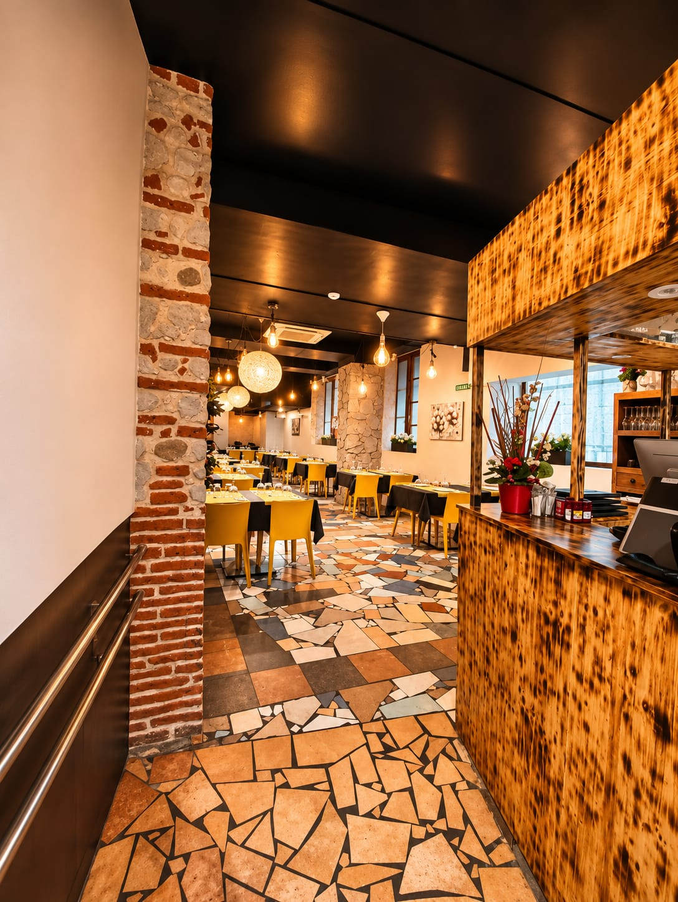
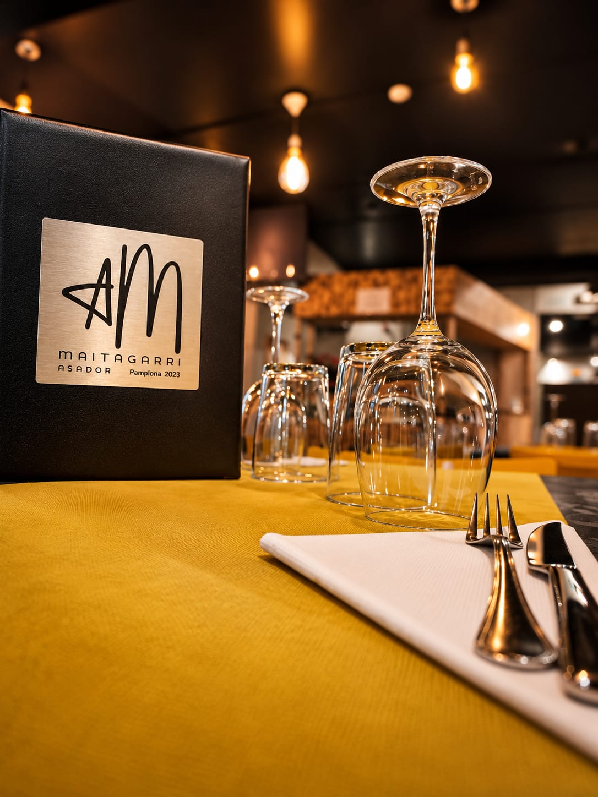
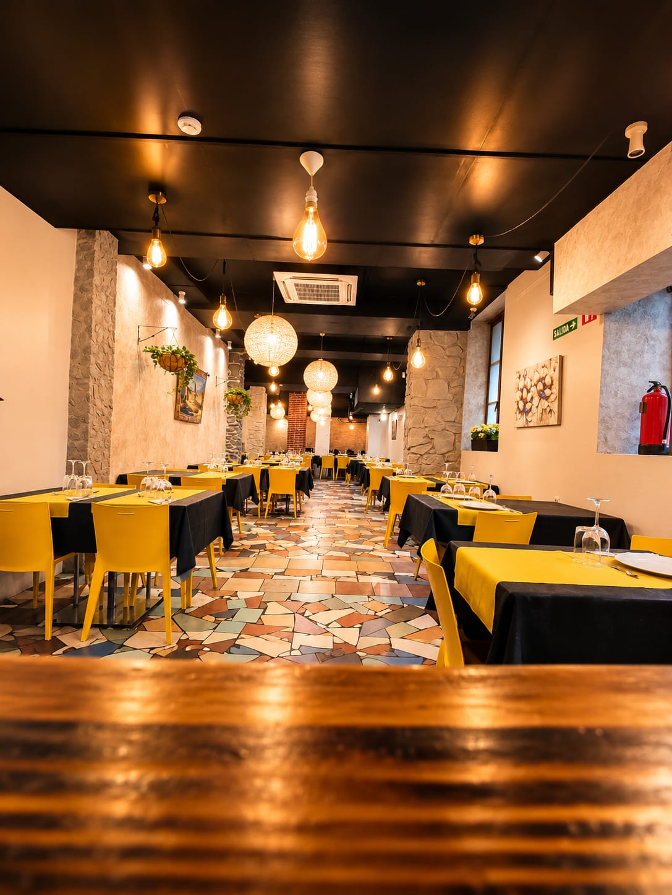
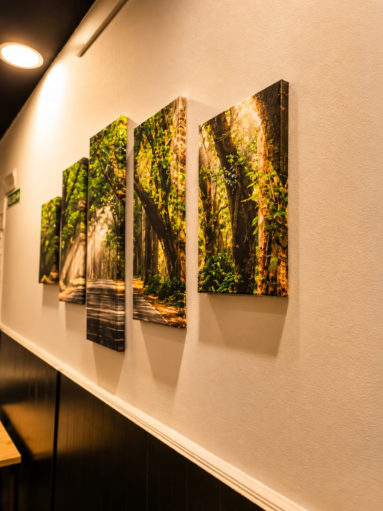

Producto y brasa
Carne a la brasa, chuletón, producto navarro, pinchos y una carta que se disfruta mejor compartida.
 ASADOR · PAMPLONA
ASADOR · PAMPLONA
Cenas de empresa · Restaurante en Pamplona
Un comedor en pleno Casco Viejo, una carta para compartir y una propuesta que podemos ajustar a vuestro grupo.
Consultar disponibilidadHecho para vuestro grupo
Contadnos la fecha, cuántos seréis y qué tipo de cena tenéis en mente. Podéis venir a la carta o consultar una propuesta de temporada.
Solicitar disponibilidad
El espacio también forma parte del plan
Un comedor con carácter, mesas preparadas y rincones que hacen que una cena de empresa se sienta especial desde que entráis.



¿Ya tenéis fecha? Cuéntanos cuántos sois y preparamos la propuesta.
Hablar con MaitagarriUna celebración sin complicaciones
Carne a la brasa, chuletón, producto navarro, pinchos y una carta que se disfruta mejor compartida.
Estamos en Calle Mercaderes, 16, dentro del Casco Viejo de Pamplona, cerca de la vida de la ciudad.
Indicad fecha, comensales y necesidades. El equipo os responderá para confirmar disponibilidad y opciones.
Preguntas frecuentes
Sí. Envíanos la fecha y el número aproximado de comensales para revisar disponibilidad y orientarte con la propuesta.
Sí. Puedes consultar Navidad y Nochevieja en nuestra página de celebraciones, además de la carta y el menú sidrería.
Rellena el formulario de reserva o llámanos al 948 722 303. La mesa queda confirmada cuando el equipo de Maitagarri te responde.
Cenas de empresa en Pamplona